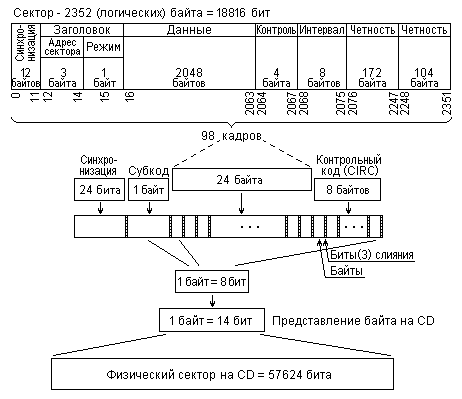
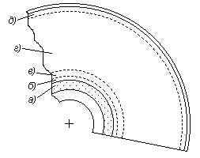

3.2.2. Организация данных на оптических дисках
Данные записываются на оптических дисках в различном формате. Эти различия возникли из-за использования оптических дисков в разных областях. При этом почти для каждого из применений первых оптических дисков был даже разработан свой стандарт. Это и привело к наличию довольно большого разнообразия форматов данных, особенно для компакт дисков (CD).
При разработке стандартов для DVD постарались избежать такого положения, что удалось, но только отчасти. И если форматы представления данных на DVD удалось сделать более или менее стандартными, то технологические поиски разработчиков все-таки привели к появлению различных по используемым технологиям и не всегда совместимых друг с другом физически носителей.
Первый стандарт на компакт-диски, разработанный компаниями Philips и Sony и появившийся в 1980 году, описывал диски, предназначенные для цифровой записи музыки: CD-DA (Compact Disk Digital Audio). Этот стандарт получил у разработчиков название "Красная книга", хотя имеется и другая его редакция от International Electronic Commission - IEC (60)908, и он продолжает пополняться. В нем, в частности, был введен получивший широкое распространение формат оцифровки звука: 16-битное аналого-цифровое преобразование с частотой снятия отсчетов 44,1 кГц.
В этом стандарте были определены:
- спецификация диска, включая его физические параметры, допуски на них и характеристики окружающей среды;
- оптические характеристики;
- допустимые отклонения параметров и частота ошибок;
- системы модуляции сигнала и коррекции ошибок;
- порядок размещения информации и управляющих данных (подканалов) на диске и др.
В 1984 году те же компании разработали стандарт, описывающий компакт-диски, предназначенные специально для хранения данных для ЭВМ. В технологической части (спецификация диска, световых сигналов, модуляции и коррекции, размещения данных) он основывался на спецификациях "Красной книги", а структуру и формат хранимых данных определял в виде, более приспособленном для хранения информации в компьютерах. Стандарт стал известен под названием "Желтой книги" (позже появились его версии ISO-10149 и редакция ECMA-130 Европейской ассоциации производителей ЭВМ - European Computer Manufacturers Association), а определяемые им диски и стали называть CD-ROM.
Впоследствии появилось еще несколько стандартов-"книг" (зеленая, оранжевая, белая и синяя), описывающих различные диски. В частности, "Оранжевая книга" определяла стандарты магнитооптических дисков (см. п. 3.3.2), записываемых и перезаписываемых дисков CD-R (точнее, они сперва назывались дисками с однократной записью CD-WO - Write Once) и CD-RW.
При оптическом считывании количество ошибок достаточно велико. Это потребовало использования сложной схемы представления данных и их кодирования. Причем если при воспроизведении звука необнаруженные или неисправленные ошибки считанных данных приведут лишь к ухудшению качества звучания, то при считывании файлов для ЭВМ недопустимы ошибки даже в одном бите. Поэтому организация хранимых данных для CD-DA и CD-ROM несколько различна.
Данные записываются на диски блоками по 2352 байта, называемые также секторами (как и у жестких дисков), которые и являются минимально адресуемыми единицами информации. Блоки эти состоят из 98 кадров по 24 байта каждый (соответствующих в CD-DA группе из шести 16-разрядных выборок - отсчетов при квантовании (оцифровке) стереофонического звукового сигнала).
В CD-DA байты блока информационные, а у CD-ROM только 2048 или 2336 байтов могут быть информационными (в зависимости от режима), остальные - служебные, которые используются для синхронизации, управления и контроля.
Однако физически на диске эти блоки занимают существенно больше (примерно в 3 - 3,5 раза) места, так как для уменьшения количества ошибок используют специальные контрольные коды и избыточное кодирование. Это и позволяет получить приемлемую частоту ошибок считывания данных.
Для CD-ROM каждый блок начинается 12-байтовым полем синхронизации (байт 00h, 10 байтов FFh и байт 00h), за которым следуют четыре байта заголовка (адрес и режим), а затем область данных. Если на область данных выделено 2048 байтов, то последние 288 байтов используются для контрольных кодов, в противном случае все 2336 байтов информационные. В CD-DA блок содержит только поле данных.
Каждый кадр блока при записи на диск подвергается серии преобразований: сперва (для CD-ROM), вспомогательному "перемешиванию" - скремблированию битов кода, затем кодированию на логическом уровне специальным помехозащищенным кодом Рида-Соломона (CIRC - Cross Interleaved Read-Solomon Code), при котором в кадр вставляется 8 контрольных байтов, кроме того, в начало кадра вставляются 24 бита синхронизации и специальный символ (т.н. субкод восьми (дополнительных) каналов P, Q, … ,W, предназначенных для управляющих данных), а также по три дополнительных бита между байтами, называемых битами слияния. Далее все байты, кроме битов синхронизации и битов слияния, кодируются специальным кодом, представляющим каждый байт четырнадцатью битами, называемыми в стандарте канальными битами. Таким образом, один кадр, содержащий 24 байта данных, занимает 24 (синхронизация) + 3 (биты слияния) + 14 (код подканалов) + 3 (биты слияния) + (14 + 3) x 32 (байты данных с битами слияния) = 588 бит. Последовательность этих преобразований иллюстрируется также на рис. 35.

Рис. 35. Представление сектора данных на компакт диске
Формально, избыточность записи можно определить при наиболее полном контроле (т.е. при 2048 байтах информации в секторе) отношением 588 x 98 / 2048 x 8 = 57624 / 16384 ≈ 3,52, т.е. физически для записи одного байта информации нужно около 3,5 байтов. Если все байты блока информационные, то избыточность оценивается отношением 588 x 98 / 2352 x 8 = 57624 / 18816 ≈ 3,06, т.е. примерно троекратна.
Как отмечалось выше, дорожка для записи у оптического диска одна, спиральная (как у грампластинки - сказалась специализация разработчиков), развертывающаяся по всему диску от его внутренней части к внешнему краю (наоборот, по отношению к грампластинке). Поскольку первые оптические диски CD-DA использовались в звукозаписи, а ее традиционными носителями были грампластинки и магнитофонная лента, на которых записывалось непрерывное звучание в пределах одной композиции и одна последовательность композиций, то адресация в них была организована по времени.
CD-ROM также сохранили эту схему, при которой местоположение сектора указывается в минутах от 0 до 74 (79), секундах (0-59) и 1/75 долях секунды (или, иначе, номере блока в секунде, так как при нормальном звучании аудио дисков воспроизводится 75 блоков в секунду) от начала воспроизведения соответствующей зоны диска.
Конечно, время, будучи определенной величиной, предполагает некоторую фиксированную скорость считывания, а, как известно, скорости у приводов CD-ROM могут быть различны. Поэтому время задается именно для скорости считывания 75 блоков/с. Этому соответствует скорость передачи данных 176400 байт/с (75 блоков/с x 98 кадров x 24 байта), которая соответствует частоте квантования 44,1 кГц стереофонического (двухканального) аудио сигнала при 16-битной (2-байтной) точности аналого-цифрового преобразователя (2 канала x 2 байта x 44100 Гц).
Однако широко распространенная единица измерения скорости записи информации на CD соответствует несколько меньшей величине - 150 Кбайт/с, так как один блок цифровых данных при наличии контрольных кодов в секторе (см. рис. 35) содержит не 2352 байта данных, а только 2048 байтов, что дает 2048 байтов x 75 блоков/с = 153600 байт/с или, при пересчете на K=1024, ровно 150 КБайт в секунду.
Ну и, конечно, следует помнить, что реальная скорость считывания с диска в 3-3,5 раза выше, учитывая избыточность записанных данных (75 блоков/с x 98 кадров x 588 бит = 4321800 бит/с, или, приводя к 8-битному байту, 540225 байт/с).
Логически сектора объединяются в информационную дорожку (трек - термин из звукозаписи), количество секторов в треке переменное, от 300 секторов. Трек может соответствовать, например, музыкальной композиции на CD-DA или какому-либо файлу (группе файлов) на CD-ROM, причем, согласно стандарту, он может занимать как часть физической дорожки диска, так и всю ее и даже более чем один диск.
Данные записываются в так называемую информационную область диска (кроме нее в CD с записью имеется еще системная область). Эта область, в свою очередь, делится на три зоны (areas): зону ввода (lead-in), зону данных (user data) и зону вывода (lead-out). Располагаются они в названном порядке, начиная от внутренней части диска, как показано на рис. 36.
Зона ввода предназначена для позиционирования считывающей системы на дорожке и синхронизации. В этой зоне имеется только одна информационная дорожка, на которой (в служебной области - канале Q) записывается таблица содержимого диска (TOC - Table of Contents). В ней может быть указано до 99 адресов информационных дорожек (треков).
Зона данных предназначена для собственно хранения данных и может содержать до 99 информационных треков, адресуемых, как указано выше: в минутах, секундах и долях секунды.
Зона вывода завершает зону данных и содержит только один (с записью тишины или нулей) информационный трек.
Записываемые и перезаписываемые CD, согласно требованиям "Оранжевой книги", имеют дополнительную область - системную (SUA - System Use Area). Эта область расположена в центральной части диска, до начала информационной, и разделяется на две части: зону калибровки мощности (PCA - Power Calibration Area) и зону памяти программ (PMA - Program Memory Area).
Первая из них используется при записи для подбора мощности записывающего сигнала лазера и допускает до 99 таких операций, выполняемых при каждой записи. Вторая - служит для записи до 99 номеров треков и адресов их начала и конца, что выполняется по окончании сеанса записи.
Кроме того, зона, эквивалентная зоне данных (User Data Area) информационной области CD-ROM, в записываемых дисках называется программной зоной (Program Area).

Рис. 36. Расположение основных зон на компакт диске: а) зона калибровки, б) зона памяти программ, (а и б только для записываемых и перезаписываемых дисков) в) зона ввода, г) зона данных пользователя (программная зона), д) зона вывода
Ряд особенностей организации имеют также многосессионные записываемые диски (Multisession CD).
Организация данных на DVD дисках, в целом, аналогична рассмотренным вариантам. Однако для записи данных в них используются другие способы кодирования.
Кроме рассмотренных выше основных типов компакт-дисков CD-DA и CD-ROM, имеются также еще более десятка их разновидностей. Среди них, в частности, диски для хранения изображений - Photo CD, для хранения видеозаписей с MPEG-сжатием - Video CD и Super Video CD, интерактивные диски с разными типами данных CD-I, воспроизводимые специальными проигрывателями, мультимедийные диски CD Plus и другие.
Среди DVD дисков количество различных форматов не столь велико, и, кроме рассмотренных DVD-ROM, DVD-R, имеются три разновидности перезаписываемых дисков DVD-RAM, DVD-RW и DVD+RW, а также DVD-Video и DVD-Audio.